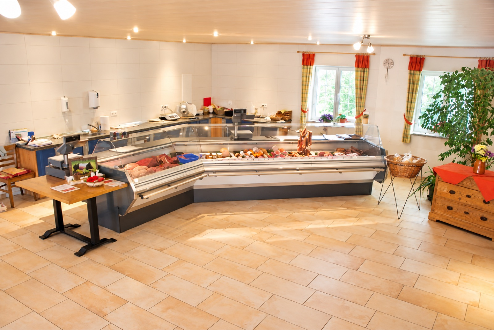
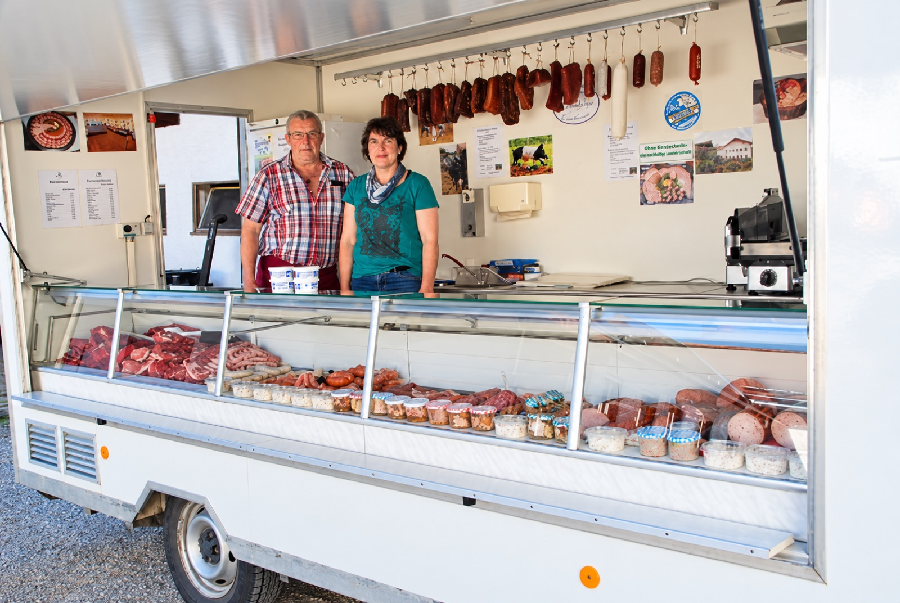
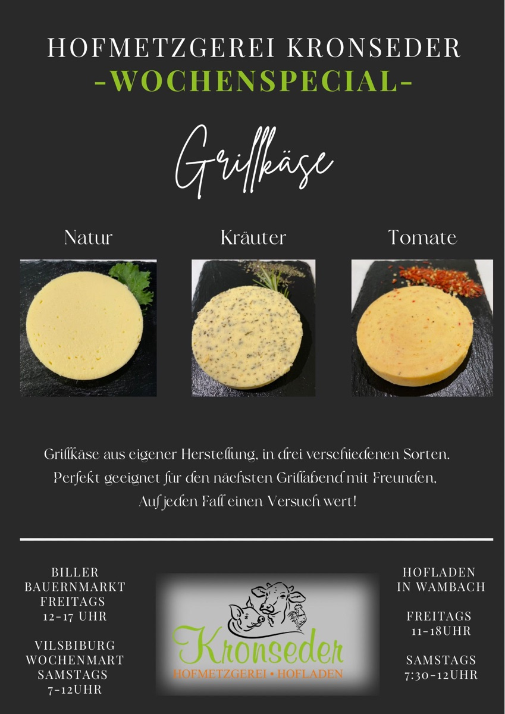
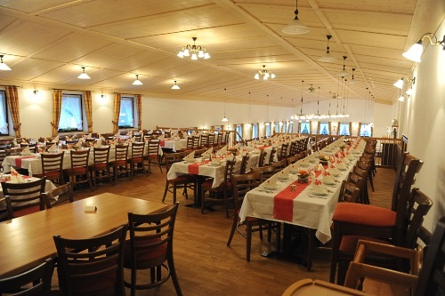
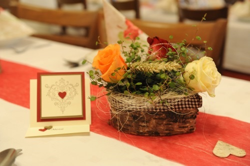

Familienbetrieb seit 1942 · Wambach
Lebensmittel aus
unserer Region.
Handwerkliche Fleisch- und Wurstwaren, ehrliche Lebensmittel und bayerische Gastlichkeit – direkt vom Hof.
Fr Hofladen 11–18 Uhr Sa 7:30–12 Uhr
Unser Versprechen
Verantwortung vom Stall
bis zur Theke.
Gute Qualität beginnt für uns bei einer sorgfältigen Haltung und Fütterung. Unsere Mastschweine werden größtenteils auf Stroh gehalten. Das Futter stellen wir selbst zusammen und verwenden dabei vor allem Getreide aus eigenem Anbau.
Tiergesundheit und eine verantwortungsvolle Betreuung gehören für uns zur täglichen Arbeit. So entstehen Fleisch- und Wurstwaren, hinter denen wir als Familienbetrieb stehen.

Direkt ab Hof
Frische, die man sieht. Qualität, die man schmeckt.
Unser Hofladen
Regional einkaufen.
Persönlich beraten.
In unserem Hofladen finden Sie Fleisch von alten Rassen wie z. B. Duroc, regionales Rindfleisch und hausgemachte Wurstwaren aus eigener Herstellung.
- Fleisch & Wurst
- Eier aus Freilandhaltung
- Käse & Joghurt
- Honig, Nudeln & Mehl
- EM-Produkte
- Geschenkkörbe auf Bestellung
Öffnungszeiten
Frisch für Sie da.
Feiertags geschlossen · weitere Termine nach telefonischer Vereinbarung.
Unterwegs in der Region
Unser mobiler
Verkaufsstand.

Freitags
Bauernmarkt Biller
12:30–17:00 UhrStraße / Halle: Am Moos 1784174 EchingRoute öffnen ↗
Samstags
Wochenmarkt Vilsbiburg
07:00–12:00 UhrStadtplatz84137 VilsbiburgRoute öffnen ↗

Aktuell im Hofladen
Hausgemachter Grillkäse.
Drei Sorten, ein Sommerfavorit: Natur, Kräuter und Tomate. Perfekt für den nächsten Grillabend.
Verfügbarkeit anfragen →Gastwirtschaft & Saal
Feste, die in Erinnerung bleiben.
Vom kalten Buffet bis zum kompletten Festmahl aus unserer eigenen Metzgerei: Wir richten Hochzeiten, Geburtstage, Firmen- und Familienfeiern mit bis zu 199 Gästen aus.
199 Plätze im Saal1 gemütliche Gaststube
Termin besprechen

Besuchen Sie uns
Ein Stück Region
für Ihren Tisch.
Hofmetzgerei Kronseder
Anton Kronseder
Wambach 26
84416 Wambach / Vils
Anton Kronseder
Wambach 26
84416 Wambach / Vils
08084 8731
anton.kronseder@freenet.de